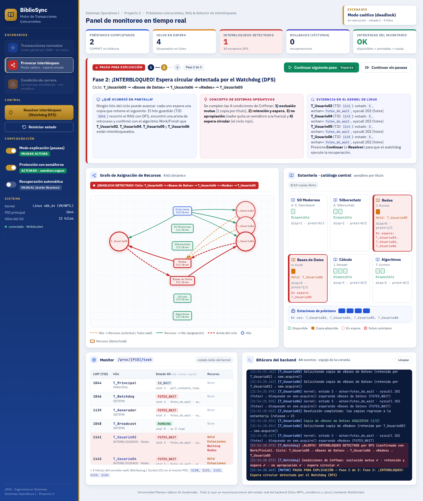
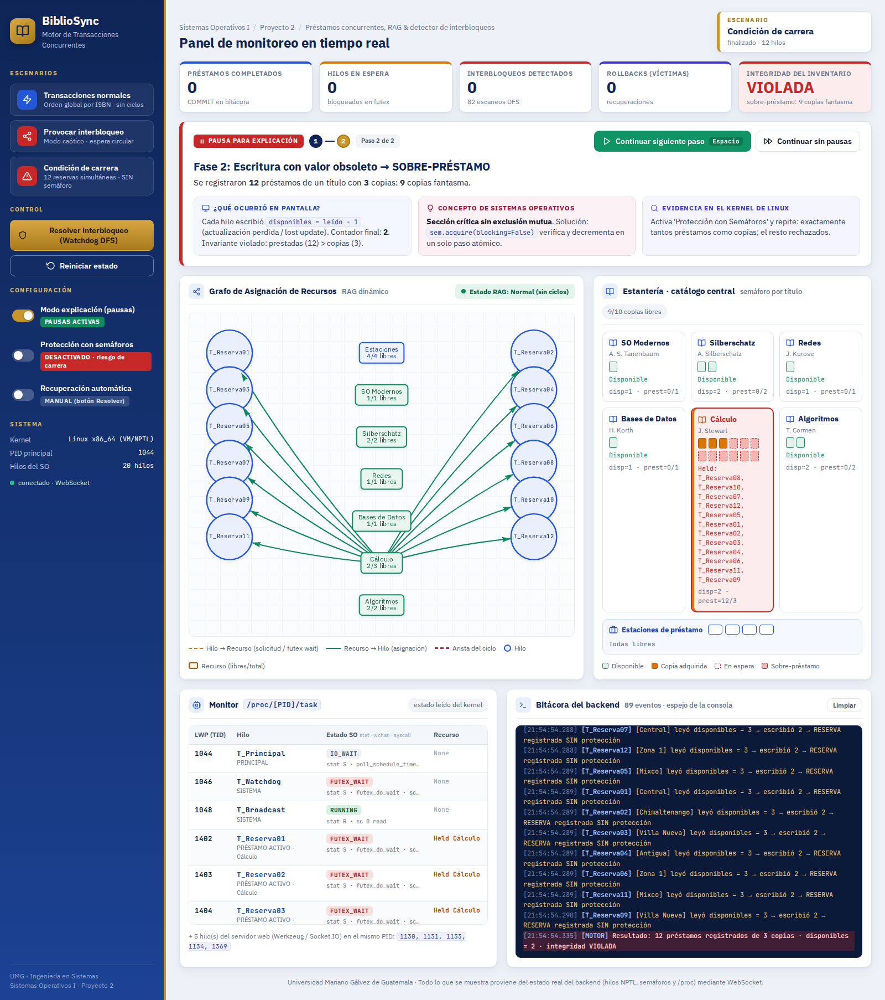
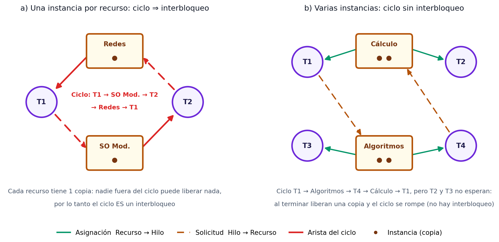
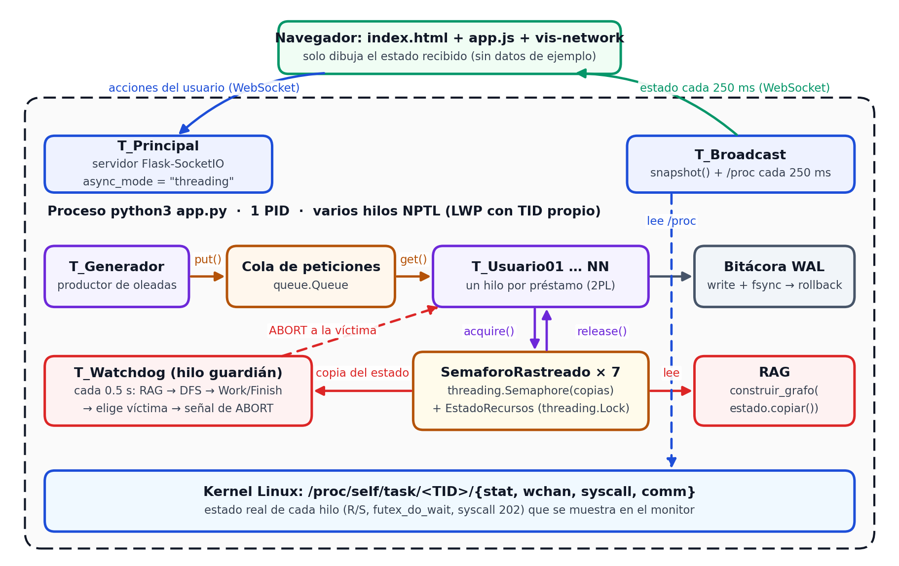

BiblioSync: sistema de préstamo de libros de una biblioteca universitaria con varias sucursales conectadas al mismo catálogo. Cada solicitud de préstamo es un hilo real del sistema operativo (NPTL en Linux) que compite por copias limitadas protegidas con semáforos. Un hilo guardián construye el Grafo de Asignación de Recursos (RAG), detecta interbloqueos con DFS y los resuelve con rollback de una víctima. Unidades 3 (Concurrencia y Sincronización) y 4 (Interbloqueos).

| Escenario | Qué ocurre | Concepto |
|---|---|---|
| Transacciones normales | Los hilos piden sus libros en orden de ISBN; nunca se forma un ciclo. | Semáforos, bloqueo en dos fases, prevención por orden total. |
| Provocar interbloqueo | Se respeta el orden de la cola; las solicitudes se cruzan y surge una espera circular real. El watchdog la detecta (DFS) y aborta a una víctima. | 4 condiciones de Coffman, RAG, detección y recuperación. |
| Condición de carrera | Sin semáforo: 12 préstamos de un libro con 3 copias. Con semáforo: exactamente 3. | Sección crítica, exclusión mutua. |

| Concepto | En el proyecto |
|---|---|
| Hilo NPTL (modelo 1:1) | Cada threading.Thread aparece en ps -eLf y en /proc/<PID>/task. |
| Semáforo contador | Un threading.Semaphore(copias) por título; 4 estaciones de préstamo. |
| Futex | Los hilos bloqueados aparecen en estado S con wchan = futex_do_wait (syscall 202). |
| Condiciones de Coffman | Exclusión mutua, retención y espera, no apropiación y espera circular se cumplen en el modo caótico. |
| RAG + DFS | El hilo T_Watchdog recorre el grafo cada 0.5 s y confirma con el algoritmo Work/Finish. |
| Recuperación | Rollback del hilo que entró más recientemente al ciclo, usando la bitácora (WAL). |


sudo apt update && sudo apt install -y python3 python3-venv git htop strace
git clone https://github.com/davidargel/proyecto_SO.git
cd proyecto_SO/motor-transacciones
chmod +x run.sh scripts/*.sh
./run.sh
# Abrir en el navegador: http://localhost:5000Para guardar la evidencia (ps -eLf, /proc, top -H) abre otra terminal y ejecuta ./scripts/evidencia.sh. Prueba de integridad bajo carga: python3 scripts/prueba_carga.py.
| Métrica | Sin protección | Con semáforos |
|---|---|---|
| Violaciones «prestadas > copias» | 10 448 | 0 |
| Títulos con contador final incorrecto | 6 de 6 | 0 de 6 |
| Resultado | Integridad violada | Integridad OK |